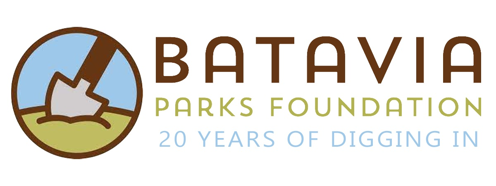
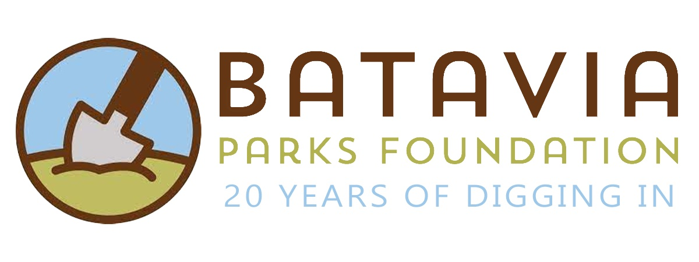
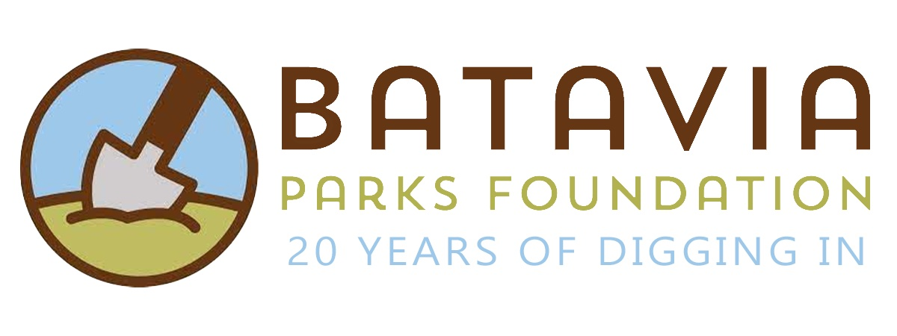
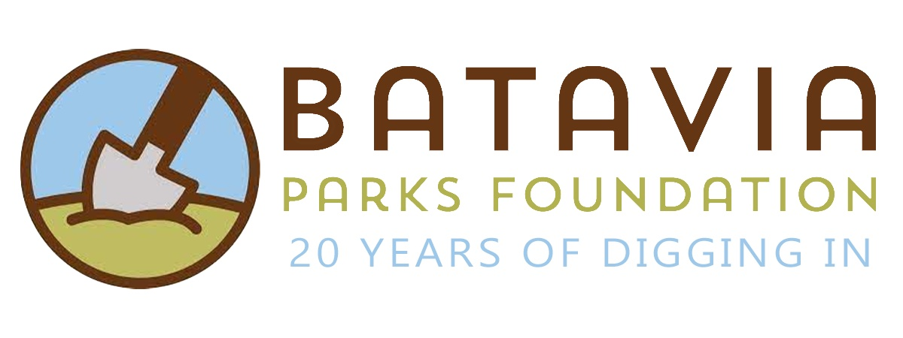

EXPERIENCE

 




I led 2 major research projects as first author with Dr. Claus-Peter Richter. For the first, we aimed to reduce diagnosis cost and increase diagnosis timeliness and accessability in primary care. To do so, I wrote signal processing and machine learning algorithms using MATLAB and Python to detect a nasal disease called Chronic Rhinosinusitis based on speech with >73% accuracy. For the second project, I wrote code to automatically parse and analyze 1000+ X-ray fluorescence microscopy scans. Then, collaborating with the lab, we ran statistical analysis to detect the effectiveness of biphosphonate treatment for Osteogenesis Imperfecta. Both projects were presented at prestigious conferences (ARO and ABRCMS) and are submitted for peer-review.

As a summer intern in UChicago's Security, Algorithms, Networks and Data Lab, I worked on the PimEyes project under Prof. Ben Zhao and with Emily Wenger. I designed a deep learning face generation program to create 20+ deepfakes to measure the scope of PimEyes' image scraping capabilities. For measuring purposes, I built honeypot website and social media accounts to be scraped. Additionally, I presented findings with the lab and assisted other adhoc lab research.
Now Batavia Parks Foundation. I worked directly with the startup's founder (Britta McKenna), the board of directors, and the city's Geographic Information System (GIS) expert to increase Encore Batavia's digital presence. I built a GIS map of Batavia’s landmarks and designed a website with HTML/CSS and JavaScript to improve outreach by >50%. Additionally set up a google analytics tag to monitor the website and optimize pages.
I worked under Dr. Lingxi Li to build a self-driving curved road navigation system with MATLAB and a Proportional, Integral, and Derivative (PID) algorithm.